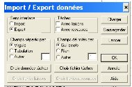
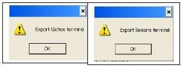
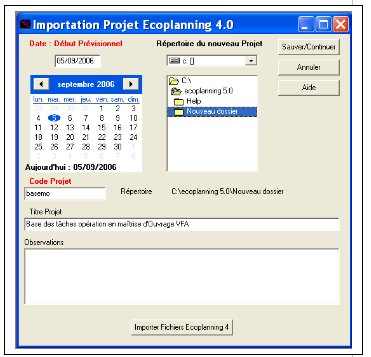
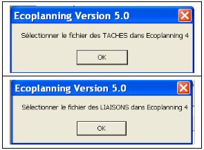
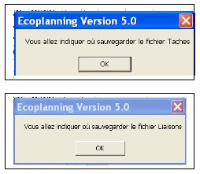

Procédure d’export d’un fichier d’un projet Ecoplanning 4.0 vers Ecoplanning 5.0
Procédure d’export d’un fichier d’un projet Ecoplanning 5.0 vers Ecoplanning 4.0 :

Au préalable vous devrez copier dans le répertoire ECOWIN ( Ecoplanning 4.0), le fichier « Export projet 4.0 vers projet 5.0 », celui-ci se trouve sur le CD d'installation Ecoplanning 5.0.
Procédure d’export d’un fichier d’un projet Ecoplanning 4.0 vers Ecoplanning 5.0
Dans le logiciel Ecoplanning 4.0

- cliquez dans le menu « Fichier » sur Import/Export
- charger EXPORT 5.0.Int dans la liste des fichiers
- puis cliquez sur la commande « Lancer »
Vous verrez successivement apparaître les deux boites
"export tâches terminé",
" export liaisons terminé"
Puis cliquez sur « OK» pour fermer le projet et sortez du logiciel Ecoplanning 4.0 pour allez à Ecoplanning 5.0

Dans le logiciel Ecoplanning 5.0
- cliquez dans le menu « Fichier » sur Import
dans la boite de dialogue choisissez :
la date de début du projet, le code du projet, le titre du projet, voir une observation sur le projet
puis vous allez importer les données des tâches de la version Ecoplanning 4.0 à la version 5.0
- cliquez sur la commande « Importez Fichier Ecoplanning 4 »
Dans les boites dialogue il vous sera demandé
- charger « Taches4 », dans le fichier «Ecowin » de la version Ecoplanning 4.0,
- charger « Liaisons 4», dans le fichier «Ecowin » de la version Ecoplanning 4.0,
- choisissez le répertoire de ce projet dans la version 5.0
- cliquez sur la commande « Sauver/continuer »

Les données du projet dans la version 4.0 ont été transférées dans la version 5.0, voir :
L’onglet de saisie prévisionnelle
La boîte de dialogue « Critéres » du menu « Outils »
L’onglet «Affectation des critères »
Vous pourrez apporter des nouvelles modifications, et obtenir à partir des plannings qui sont mémorisés, un planning pour un besoin donné
Procédure d’export d’un fichier d’un projet Ecoplanning 5.0 vers Ecoplanning 4.0 :
Dans le logiciel Ecoplanning 4.0 au départ
Dans un premier temps préparez ce fichier de réception dans la version 4.0
Vous allez choisir un fichier de la version 4.0 dont ou le ou les plannings obtenus vous intéressent pour votre nouvelle opération.
- Choisir un fichier planning dans la version 4.0 dont les configurations des planches plannings vous
conviennent
- Sauvegarder ce fichier sur le non du nouveau projet concerné »
- cocher toutes ses tâches avec le menu «Cocher »,
- supprimer avec le menu «Cocher », toutes les tâches de cet ancien projet
- saisir la date de début de votre opération.

Dans le logiciel Ecoplanning 5.0
Au préalable dans version 5.0
- préparez le fichier à récupérer et faire apparaître toutes les tâches à Exporte dans la version 4.0
dans l’onglet « Saisie prévisionnelle »
- cliquez dans le menu « Fichier » sur Exporter
- charger « Taches», dans le fichier «Ecowin » de la version Ecoplanning version 4.0,
- charger « Liaisons», dans le fichier «Ecowin de la version Ecoplanning version 4.0
Ce fichier est prêt pour être récupéré dans la version 4.0
Dans le logiciel Ecoplanning 4.0 transfert terminé
Dans un deuxième temps récupérer le fichier qui provient de la version 5.0
- cliquez dans le menu « Fichier » sur Import/Export.la boîte de dialogue "Import / Export données" apparaît :
- charger « Export.Int »
puis dans l’espace en haut à droite « Sens interface »
- cliquer sur la case « Import»
- cliquez sur la commande « Lancer »
Vous allez voir apparaître successivement les deux boites de dialogues
- cliquez sur « OK» le chargement est effectué
Les données du projet de la version 5.0 ont étté récupérés dans l’ancienne version 4.0
Remarque Dans la version 4.0 vous ne pouvez recevoir que trois critères sous un seul niveau
| Sommaire | Mots Clés | A | B | C | D | E | F | G | H | I | J | K | L | M | N | O | P | Q | R | S | T | U | V | W | X | Y | Z | Autres |